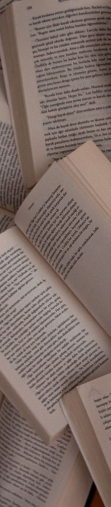

Programmation et Projet encadré
Laura Darenne et Camille Clavier
읽다
Lire
看书
Pourquoi choisir le mot Lire
Lire est un concept universel présent (quasiment) partout dans le monde. Mais la lecture est entouré de problématiques, parfois spécifiques à un pays, parfois non. Nous avions déjà discuté à l'occasion des différences dans les habitudes de lecture en Chine et en Corée et nous souhaitons aller plus loin à travers ce projet.
En France, on lit de moins en moins, du moins en avons-nous l'impression en lisant la presse ou discutant avec des personnes, généralement, plus âgés. Il y a cette idée que ce sont les jeunes qui ne lisent plus, ou du moins pas "les classiques" de la littérature. L'entrée dans la vie active semble être aussi un obstacle pour les adultes qui ne disent plus avoir le temps de lire.
En Chine, peu importe la génération, les personnes âgés comme les plus jeunes sont beaucoup sur leur téléphone. Les chinois travaillent aussi très longtemps et disent ne pas avoir le temps d'aller prendre un livre en librairie ou à la bibliothèque, les deux fermant avant qu'ils sortent du travail. Les enfants lisent également très peu à cause des devoirs et des activités extra-scolaires qui prennent énormement de leur temps.
En Corée, le manque de temps à cause du travail se fait également ressentir. Les jeunes lisent beaucoup plus sur leur téléhpone, mais les personnes plus âgées ont tendance à rester sur le papier. Le milieu de l'édition papier est toujours très important en Corée.
Hypothèse sur le nuage de mots
On pourrait retrouver, peu importe la langue, les mots (manque de) temps, jeune, ebook (ou variation selon la langue), téléphone, travail, problème...
La question est quels mots trouverons nous plutôt dans une langue que dans l'autre ?
Quel lemme ?
En français
En coréen
Il y a deux variations :
En chinois simplifié
Il y a de nombreuses variations, les plus utilisées et les moins spécifiques sont :
Réflexion sur le choix des urls